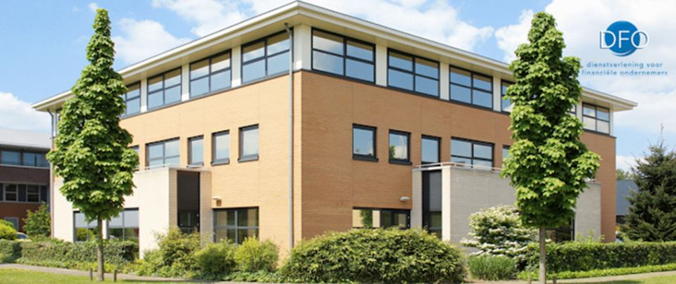
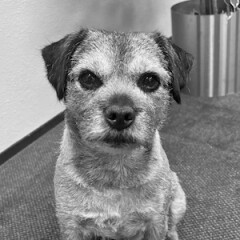

Over Bureau DFO
Jouw partner waar het gaat om succesvol ondernemen in de financiële dienstverlening. Opgericht in 1992, gevestigd in Hoevelaken.

Maak kennis met Bureau DFO
Wij geloven dat goede financiële dienstverlening begint bij persoonlijke betrokkenheid. Vanuit ons kantoor in Hoevelaken zetten we ons iedere dag in om professionals en organisaties in de financiële sector verder te helpen. We volgen ontwikkelingen op de voet, delen onze kennis en denken mee over praktische oplossingen die écht het verschil maken.
Wat ons kenmerkt? Een persoonlijke aanpak, korte lijnen en oprechte interesse in de mensen en organisaties met wie we samenwerken. Of het nu gaat om Wft-advies, onderzoek, kennisdeling of ondersteuning bij actuele vraagstukken: wij combineren deskundigheid met betrokkenheid.
Financieel adviseurs
De partner voor kennisontwikkeling en compliance, zodat je je kunt richten op je klanten.
Brancheorganisaties
Voor verenigingen en stichtingen voeren wij het volledige secretariaat.
Aanbieders en verzekeraars
Een betrouwbare partner voor inzicht en samenwerking, onder meer via ons onderzoek.
Bureau DFO ontzorgt op meerdere fronten
Opleidingen
Praktijkgerichte kennis voor financieel adviseurs.
Meer informatieSecretariaten
Ledenadministratie en bestuursondersteuning uit handen genomen.
Meer informatieZalen
Vergader- en cursusruimtes inclusief ontvangst.
Meer informatieStudio
Webinar-, podcast- en videoproducties.
Meer informatieCompliance
Grip op wet- en regelgeving, van Wft tot AVG.
Meer informatieOnderzoek
Onafhankelijk onderzoek voor de financiële adviesketen.
Meer informatieOns team
Alle medewerkers zijn bereikbaar via 033 258 04 60.

Jurjen Oosterbaan Martinius
Al 36 jaar eigenaar van Bureau DFO en autoriteit op het gebied van de Wft. Veelgevraagd spreker en sparringpartner over ondernemerschap, strategie en efficiënte bedrijfsvoering.
joosterbaan@dfobv.nlAgaat van Ekeren
Verantwoordelijk voor klanttevredenheid en alle abonnementen, zoals het Wft-servicepakket en de nieuwsbrieven.
avanekeren@dfobv.nlRobert-Jan van Loon
Begeleidt Wft-vergunningaanvragen en beantwoordt Wft- en compliancevragen van klanten.
rjvanloon@dfocompliance.nlTjeerd Erkens
Verantwoordelijk voor alle marktonderzoeken, zoals het jaarlijkse Serviceprovideronderzoek.
terkens@dfobv.nlRonald van Hamersveld
Verzorgt de financiële administratie van het bureau, partners en de verenigingen waarvoor we het secretariaat voeren.
rvanhamersveld@dfobv.nlNico den Besten
Opmaak en verzending van digitale nieuwsbrieven, website, social media en ontwerp van logo’s en huisstijlen.
ndenbesten@dfobv.nlTrineke Kuijer
Telefoon, ondersteuning van de afdelingen, verzending van webshopbestellingen en ontvangst van bezoekers.
tkuijer@dfobv.nlTanja Heerze
Facturatie en debiteurenbeheer, en ondersteuning van het secretariaat.
theerze@dfobv.nlAnja Heetmayer Knorth
Heet je welkom en zorgt dat je deelname aan onze bijeenkomsten prettig verloopt.
aheetmayer@dfobv.nlTiny Floris
Voor veel cursisten het gezicht van DFO; verzorgt de catering voor ruim 3.000 deelnemers per jaar.
gastvrouw@dfobv.nlGea van Esveld
Heet je welkom en zorgt dat je deelname aan onze bijeenkomsten prettig verloopt.
gastvrouw@dfobv.nlWillie van Puurveen – van den Berg
Heet je welkom en zorgt dat je deelname aan onze bijeenkomsten prettig verloopt.
gastvrouw@dfobv.nl
Gijs
Vaste bewoner van het pand in Hoevelaken.
Werken bij Bureau DFO
De beste resultaten ontstaan wanneer mensen met plezier samenwerken. Daarom zijn we altijd op zoek naar enthousiaste collega’s die willen meebouwen aan onze organisatie én aan de toekomst van onze relaties.
Of je nu zeer ervaren bent of aan het begin van je carrière staat: bij Bureau DFO krijg je de ruimte om jezelf te ontwikkelen, initiatief te nemen en écht impact te maken. Staat jouw ideale functie er niet tussen? Mail gerust naar Agaat van Ekeren — we maken graag vrijblijvend kennis.
Benieuwd wat wij voor je kunnen betekenen?
Bel 033 258 04 60 of mail info@dfobv.nl — we reageren binnen één werkdag.